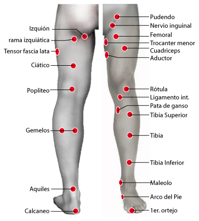

258. Escotadura ciática
258. Escotadura ciática
Escotadura ciática:
Moxarrella Catarrlis.
259. Trocanter menor
259. Trocanter menor:
Trocanter menor:
VIH 4
260. Aductor
260. Aductor
Aductor
VIH 2
261. Aductor menor
261. Aductor menor
Aductor menor:
Frustración
262. Cruris
262. Cruris
Crusis:
Tiña
263. Triang. de scarpa
263. Triang. de scarpa
Triang. de scarpa:
Lepra
264. Nervio Femoral
264. Nervio Femoral
Nervio Femoral:
Herpes VI
265. Tensor fascia lata
265. Tensor fascia lata
Tensor fascia lata:
Verrugas
Tensor fascia lata:
Gardenerella vaginalis
266. Retrotensor fascia L.
266. Retrotensor fascia L.
Retrotensor facia lata:
Verrugitas
267. Semitendinoso
267. Semitendinoso
Semitendinoso:
Epilepsia
268. Cuádriceps
268. Cuádriceps
Cuádriceps
Magda
269. Ciático
269. Ciático
Ciático:
Poliomelitis
Dorsal 7:
Aftosa
Dorsal 7:
Baja globulos blancos
270. Femur Posterior
270. Femur Posterior
Femur Posterior:
Yersinia Intestinalis
271. Afin
271. Afin
Afin:
Antineopásico
272. Supra poplíteo
272.Supra poplíteo
Supra poplíteo:
Gusano Nematodo
273. Poplíteo
273. Poplíteo
Rodilla (hl):
Leprae
Poplíteo:
Neumonia
274. Rodilla
274. Rodilla
poplíteo:
Lepra
275.Rótula
275. Rótula
Rótula:
Miedos
Rótula:
Estafilococo aureus (+)
276. Rodilla interna
276. Rodilla interna
Rodilla interna:
Tuberculosis
277. Ligamento int.rodilla
277. Ligamento int.rodilla
Mesenterio:
Estreptococo Beta
Mesenterio:
Agalactie
Maleolo:
Micorsporum
Maleolo:
Disf. Hígado
278. Ligamento ext.rodilla
278. Ligamento ext.rodilla
Maleolo interno tobillo:
Microsporum cannis
279. Plexo de rodilla
279. Plexo de rodilla
Plexo de rodilla:
Poliomelitis
280. Pata de Ganso
280. Pata de Ganso
Pata de Ganso:
Coronavirus
281. Tibia
281. Tibia
Tibia:
Pytirosporum Vers., Malassezia F.
Tibia (sup):
Malassezia furfur
282. Tibia (media)
282. Tibia (media)
Tibia media:
Actinomyces
283. Tibia (inferior)
283. Tibia (inferior)
Tibia inferior:
Piedra nigra
284. Peroné (fíbula)
284. Peroné (fíbula)
Peroné:
Proteus Mirabillis
Peroné:
Psicosis
285. Rama isquiática
285. Rama isquiática
Rama isquiática:
Estreptoco C
286. Gemelos
286. Gemelos
Gemelo (d):
Estreptococo G
287. Aquiles
287. Aquiles
Aquiles:
Escherichia Coli
Tobillo:
Shigella
288. Aquiles superior
288. Aquiles superior
Aquiles superior:
Shigella
289. Aquiles medio
289. Aquiles medio
Aquiles medio:
Shigella
290. Aquiles inferior
290. Aquiles inferior
Aquiles inferior:
Mycoplasma pneumoniae
291. Tobillo
291. Tobillo
Tobillo:
Coronavirus
Tobillo:
Pesistaltismo
292. Plexo tobillo
292. Plexo tobillo
Plexo tobillo:
Herpes IV
Tobillo:
Blastomicosis
293. Talón
293. Talón
Talón:
Estreptococo A
294. Calcaneo
294. Calcaneo
Calcaneo:
Rickettsia
Calcaneo:
Herpes VI
Muñeca:
Rickettsia
Cuello:
Autismo
295. Maleolo
295. Maleolo
Ligamento interno rodilla:
Disfunción de hígado
296. Arco del pie
296. Arco del pie
Arco del pie:
Ebola virus
Arco del pie:
Trastornos mentales
297. Empeine
297. Empeine
Empeine:
Duda
Empeine:
Estafilococo aureus (-), orzuelo perrilla
298. Supraempeine
298. Supraempeine
Infratibial:
Estafilococo epidermidis
299. Plantar
299. Plantar
Plantar:
Relajación, piernas frías
Plantar:
Reservorio de Guillen Barré
300. Retroplantar
300. Retroplantar
Retroplantar:
M. Leprae
301. Unguis
301. Unguis
Riñón:
Onicomicosis
302. Pedis
302. Pedis
Pedis:
Micosis en pies
303. Primer ortejo
303. Primer ortejo
Primer ortejo:
Micosis en pies
304. Dedos de los pies
304. Dedos de los pies
Dedos de los pies:
Micosis en pies
Continuar Otros
Rastreo Pierna
Cabeza
Cuello
Brazos
Torso
Dorso
Piernas
Otros
Puntos, lista